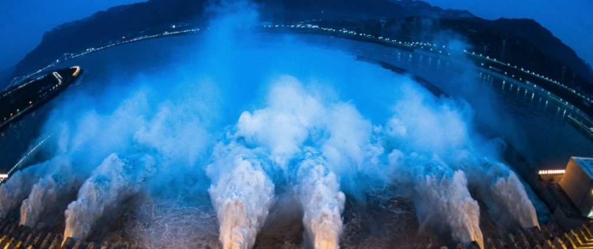
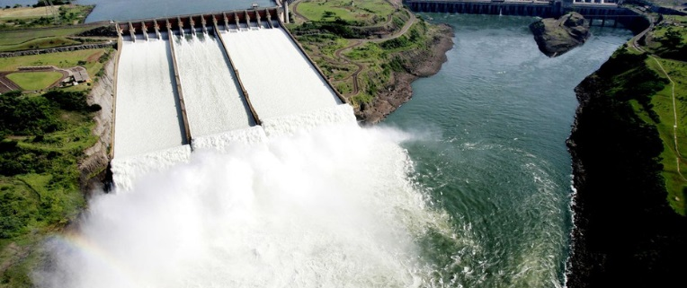
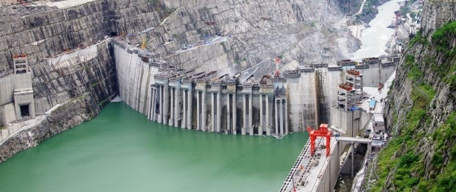
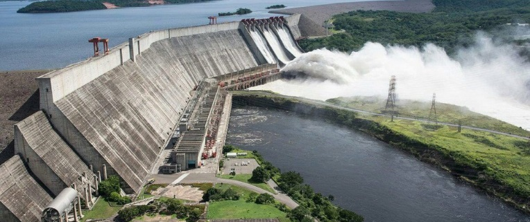

Três Gargantas, China (22.500 MW)
A foto que ilustra esse post é da maior hidrelétrica do mundo e fica na província de Hubei, na China. A construção durou 19 anos e foi concluída em 2012, ultrapassando a usina de Itaipu, que até então era considerada a maior do mundo. Construída no Rio Yang-tsé, tem capacidade de 22.500 MW, abastece nove províncias e duas cidades, incluindo Xangai.
Itaipu, Brasil e Paraguai (14.000 MW)
Até 2012 era considerada a maior usina hidrelétrica do mundo. Localizada no Rio Paraná, na fronteira Brasil-Paraguai, Itaipu tem capacidade de 14.000 MW. Considerada uma usina binacional, sendo responsável por atender quase 15% da demanda de energia brasileira e 93% do Paraguai, sua energia acumulada desde o início de sua operação, em 1984, abasteceria o mundo por 43 dias. Duas empresas que hoje pertencem à OEC participaram da obra: CBPO e Tenenge, pelo consórcio construtor e de montagem eletromecânica, respectivamente.
Xiluodu, China (13.860 MW)
Situada na província de Sichuan, na China, no curso superior do Rio Jinsha (Yantze superior), a terceira maior usina hidrelétrica do mundo foi concluída em 2014, com capacidade de gerar 13.860 MW. Fornece eletricidade principalmente para o leste e centro da China e também para Sichuan e Yunnan.
Belo Monte, Brasil (11.233 MW)
Em 4º lugar do mundo no ranking está a UHE Belo Monte, obra com participação da OEC. Considerada a maior hidrelétrica 100% brasileira, está localizada no rio Xingu, no Pará, entre os municípios de Altamira, Brasil Novo e Vitória do Xingu. Sua área total ainda abrange outros dois municípios: Anapu e Senador José Porfírio. Com capacidade gerar 11.233 MW de energia, a obra foi concebida a fio d'água, tecnologia de preservação sustentável com o objetivo de reduzir o impacto ambiental.

Guri, Venezuela (10.200 MW)
A Hidrelétrica de Guri, localizada no Rio Caroni, estado de Bolívar, na Venezuela, possui 7.426 metros de comprimento e 162 metros de altura. Com sua construção concluída em 1986, teoricamente tem capacidade de gerar 10.200 MW em 20 turbinas, é responsável pelo abastecimento de energia de toda a Venezuela. Sua rede de distribuição ainda inclui um cabo submarino para a ilha caribenha Margarita e conexões para Boa Vista, no Brasil e Cúcuta e Gajira, na Colômbia. Porém, a sua história recente vem a tornando símbolo de uma crise elétrica no país.
